Two nights on the main island: the south-coast beaches, a Ste Anne Marine Park glass-bottom boat and snorkel day, Victoria's market and Hindu temple, and the Copolia trail.
Cat Cocos ferry to Praslin: the coco de mer forest of Vallée de Mai, Anse Lazio, and a boat day to the giant tortoises of Curieuse with snorkelling at St Pierre.
One night on the island of bicycles and ox-carts: Anse Source d'Argent at low tide, Grand Anse, then the ferry back to Mahé for the late flight home on the 28th.
Read first
Does it fit ₹4–5 lakh?
Honest answer: yes, but only at the balanced level or below. Seychelles hotels are the cost driver. With a good resort on Mahé, a half-board lodge on Praslin and a mid-range hotel on La Digue, the trip comes to about ₹4.71 lakh for two, inside the target. Romantic upscale picks on all three islands push it to about ₹6.30 lakh. Guesthouses bring it down to about ₹3.14 lakh. All figures are estimates.
Option
Hotels (per night for two, with breakfast)
Flights per person
Total for two (estimate)
Fits ₹4–5 lakh?
Lean
Guesthouses: Mahé €150, Praslin €150, La Digue €140
₹60,000
₹3.14 lakh
Yes, with room to spare
Balanced (calculator default)
Avani+ Barbarons €330, Indian Ocean Lodge €325 half board, La Digue Island Lodge €260
₹75,000
₹4.71 lakh
Yes, near the top
Comfortable
Avani+ Barbarons €330, Hotel L'Archipel €445, Le Domaine de L'Orangeraie €584; adds sunset cruise and spa
₹95,000
₹6.30 lakh
No, about ₹1.3 lakh over
Every option includes ferries (about €166 per person), activities, strict vegetarian meals, local transport, the Travel Authorisation and insurance. The ways to stay inside ₹5 lakh: keep one upscale night (La Digue or Praslin) and mid-range elsewhere, fly via Abu Dhabi or Mumbai rather than Dubai, and book hotels with breakfast or half board.
Overview
Trip at a glance
Ashok and his wife's six days in the Indian Ocean, night by night.
Date
Base
Main experience
Night
Sunrise–sunset
Mon 22 Feb
In transit
Hyderabad to Dubai, evening departure
On the plane
Tue 23 Feb
Mahé
Land 07:05, resort, beach, sunset
Avani+ Barbarons (or alternative)
06:25–18:39
Wed 24 Feb
Mahé
Ste Anne Marine Park, Victoria market and temple
Avani+ Barbarons
06:25–18:38
Thu 25 Feb
Praslin
Cat Cocos, Vallée de Mai, Anse Lazio
Indian Ocean Lodge or Hotel L'Archipel
06:24–18:37
Fri 26 Feb
Praslin
Curieuse tortoises, St Pierre, sunset sail or spa
Same
06:24–18:36
Sat 27 Feb
La Digue
Bikes, Anse Source d'Argent, Grand Anse
La Digue Island Lodge or L'Orangeraie
06:24–18:36
Sun 28 Feb
Travel
Ferry to Mahé, Eden Island, EK708 at 23:55
On the plane; India 1 Mar
06:25–18:37
Sunrise and sunset are calculated for each island in local time (UTC+4, 1 h 30 min behind India).
Getting there
Flights
Option
Outbound
Return
Fare guide (return, per person)
Emirates via Dubai (recommended timings)
EK529 HYD 21:25 Mon 22 Feb → DXB 23:55; EK705 DXB 02:40 → SEZ 07:05 Tue 23 Feb
EK708 SEZ 23:55 Sun 28 Feb → DXB; connection to HYD, arriving 1 Mar
Typically US$1,050–1,300 (₹93,000–1,15,000) per Google Flights' typical range
Etihad + Air Seychelles via Abu Dhabi
EY353 HYD 04:00 → AUH 06:30; HM19 AUH 07:50 → SEZ 12:25 (leaves early on 23 Feb)
Via Abu Dhabi; check days
Typically US$840–1,300 (₹74,000–1,15,000)
IndiGo via Mumbai
HYD–BOM, then 6E1855 BOM → SEZ, about 4 h 30 min, four days a week
6E SEZ → BOM → HYD
KAYAK typical returns ₹45,600–81,500; cheapest one-ways about ₹38,000
Air Seychelles Mumbai nonstop
Not operating: cancelled from 12 Apr 2025
How to book
One return ticket HYD–SEZ–HYD so missed connections are the airline's problem. Fares were not price-checked for these dates; the calculator uses ₹60,000 (lean), ₹75,000 (balanced) and ₹95,000 (comfortable) per person (estimates).
Inter-island flight
Air Seychelles Mahé–Praslin, about 15 minutes, roughly €75–135 one way (estimate); ferries are cheaper and are what the plan uses.
Airport codes
HYD Hyderabad · DXB Dubai · AUH Abu Dhabi · BOM Mumbai · SEZ Mahé · PRI Praslin
Paperwork
Entry: Travel Authorisation
Visa
No visa for Indian passport holders. A free Visitor's Permit is issued on arrival for up to three months.
Travel Authorisation
Mandatory for every visitor, on seychelles.govtas.com or the Seychelles E-Border app only. Apply after flights and hotels are booked: you upload both, plus a selfie and passport.
Fee
Standard €10 enrolment; checkout now shows about €12.06 with government and bank charges (reported Jan 2026). The foreign ministry page still quotes €10.90. Premium €30 (6 h) and expedited €70 (1 h) also exist.
When
The foreign ministry says you can apply up to 10 days before the flight; apply at least 48 hours before.
On arrival
Return ticket, confirmed accommodation for every night, and funds of at least US$150 per person per day. Arriving without an approved authorisation costs a €30 penalty.
Insurance
Not required for entry but strongly advised; the calculator uses ₹2,500 per person (estimate).
Island hopping
Islands and ferries
Leg
How
Price per adult, one way
Time
Airport → Victoria jetty (only if going straight to a ferry)
SeyFerry shuttle, booked with the ferry
€11
About 20 min
Mahé → Praslin, 25 Feb
Cat Cocos
€56 main deck + €2 port tax; upper deck +€6, business +€21
1 h 15 min
Praslin → La Digue, 27 Feb
Cat Rose or Cat Cocos
€15 + €1 port tax
15 min
La Digue → Mahé, 28 Feb
Cat Cocos
€68 + €2 port tax
1 h 10 min direct, 1 h 45 min via Praslin
Mahé ↔ Praslin by air
Air Seychelles
About €75–135 (estimate)
15 min
The calculator budgets €166 per person for the three ferries plus one airport shuttle. Cat Cocos bookings can usually be changed or cancelled up to three working days before; Cat Rose up to one day before (SeyFerry terms).
Where you sleep
Hotels
One romantic but sensible pick per island with photos, plus alternatives. Rates are samples or estimates for two people per night with breakfast, not quotes for your dates.
Mahé, 23–25 Feb (2 nights): Avani+ Barbarons
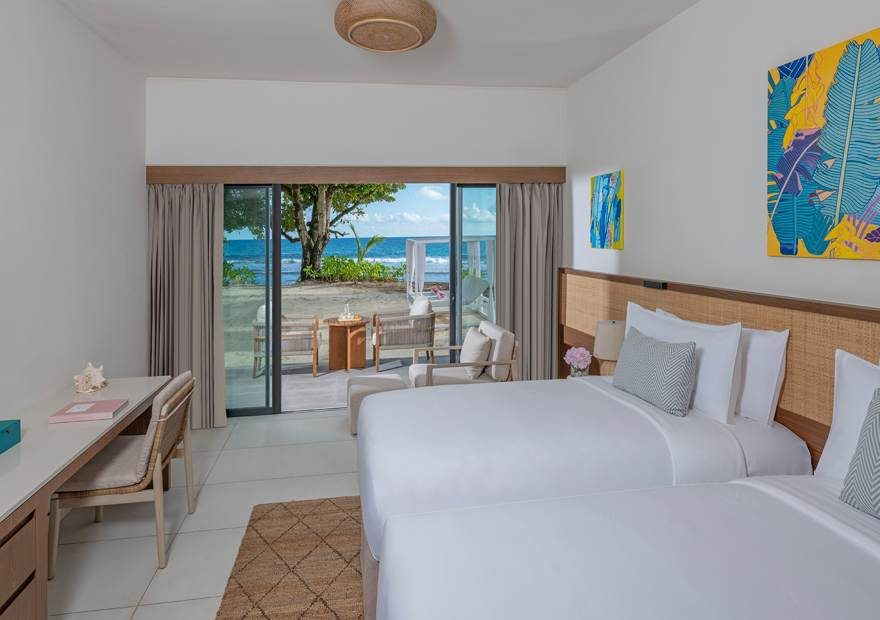
Avani+ Barbarons, guest roomPhoto: Avani Hotels, official photo, via avanihotels.com
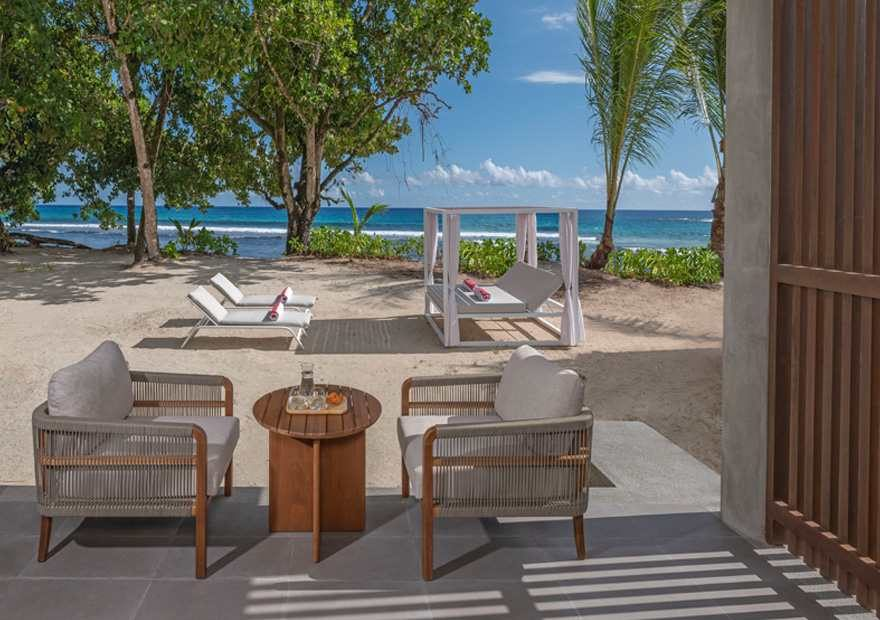
Avani+ Barbarons, beach-access room terracePhoto: Avani Hotels, official photo, via avanihotels.com
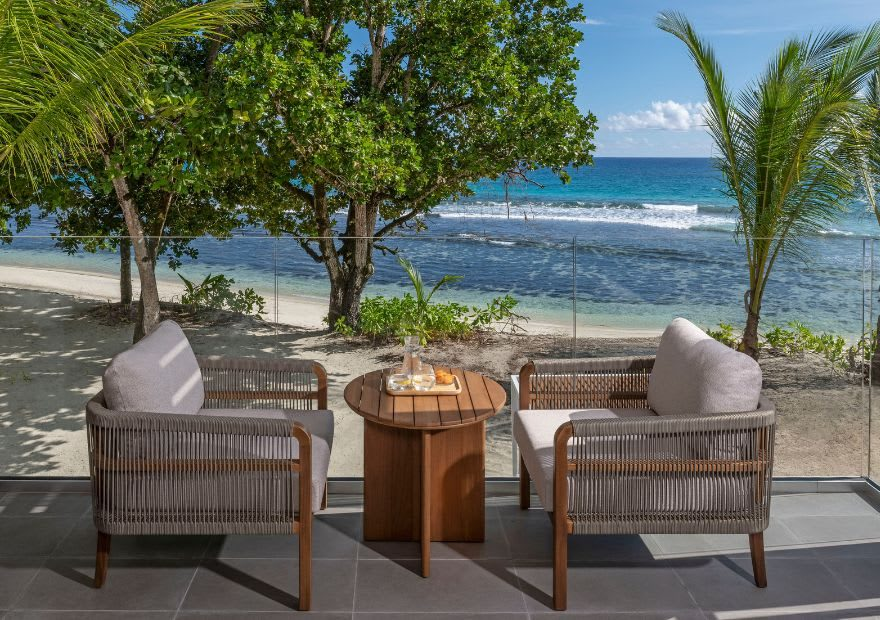
Avani+ Barbarons, terrace facing the seaPhoto: Avani Hotels, official photo, via avanihotels.com
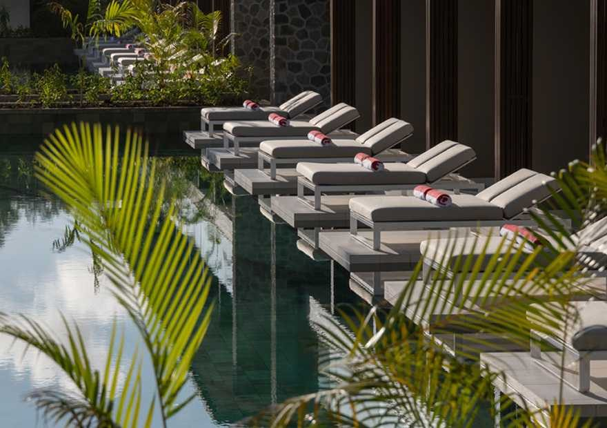
Avani+ Barbarons, poolPhoto: Avani Hotels, official photo, via avanihotels.com
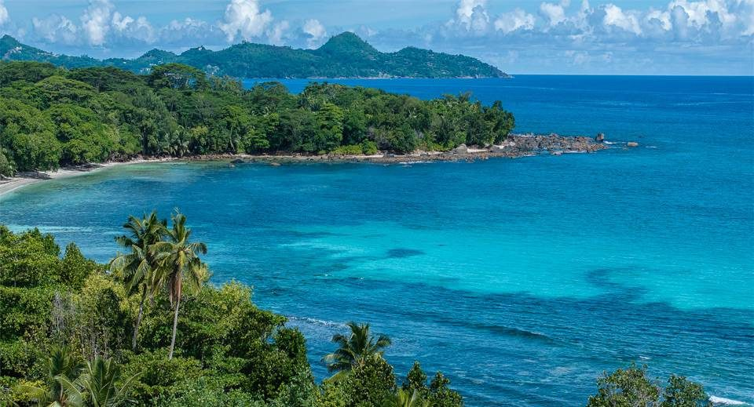
Avani+ Barbarons and the Barbarons coast from the airPhoto: Avani Hotels, official photo, via avanihotels.com
5 photos
Where
Barbarons, on Mahé's quieter west coast, about 30–40 minutes from the airport (estimate)
Why it works
Beachfront resort with garden, sea-view and beach-access rooms; spa and pool; sunset side of the island
Rate
About €330 a night for two (estimate; listings show roughly £259–377 a night in 2026)
Alternative
Rate (estimate)
Why
Coral Strand, Beau Vallon
From about €261 with breakfast
On the island's liveliest beach, and home to Mahek, an Indian restaurant
Hilton Seychelles Northolme
About €630 (average around £548)
Splurge: villas over the rocks near Beau Vallon
Guesthouse
About €150
Lean option; check reviews and breakfast
Praslin, 25–27 Feb (2 nights): Hotel L'Archipel or Indian Ocean Lodge
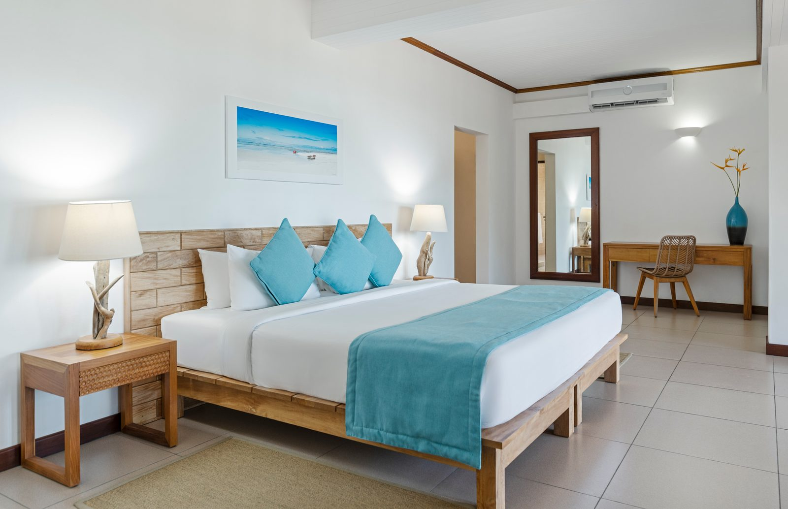
Hotel L'Archipel, Superior RoomPhoto: Hotel L'Archipel, official photo, via larchipel.com
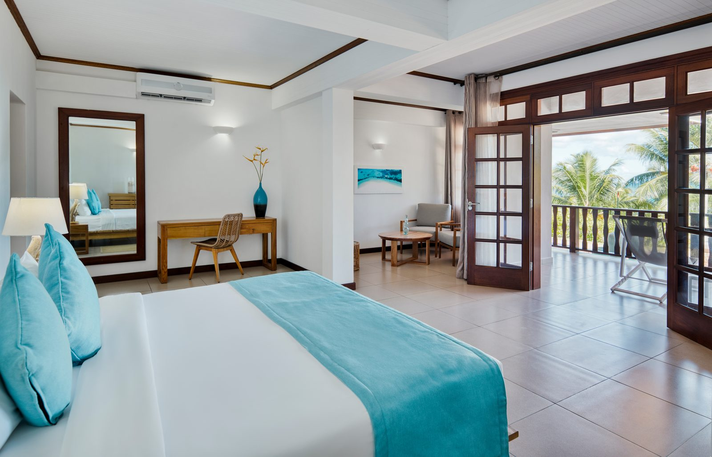
Hotel L'Archipel, Superior RoomPhoto: Hotel L'Archipel, official photo, via larchipel.com
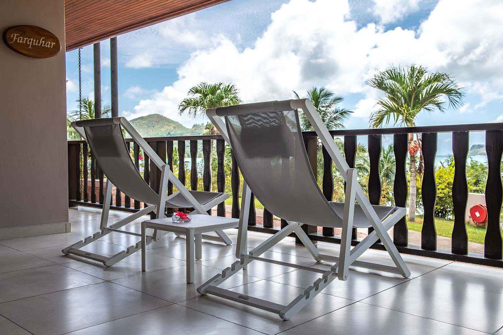
Hotel L'Archipel, balconyPhoto: Hotel L'Archipel, official photo, via larchipel.com
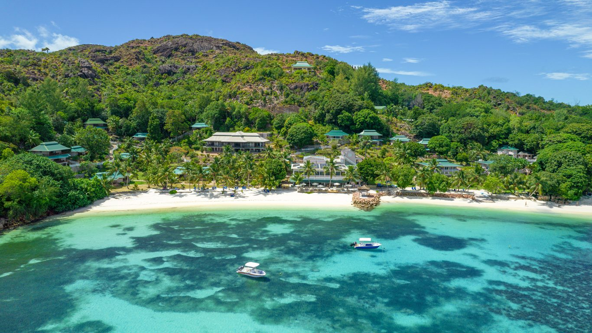
Hotel L'Archipel above Anse GouvernementPhoto: Hotel L'Archipel, official photo, via larchipel.com
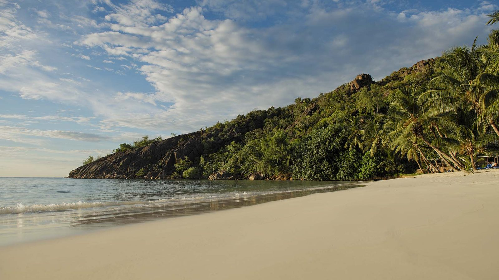
The beach below Hotel L'ArchipelPhoto: Hotel L'Archipel, official photo, via larchipel.com
5 photos
Hotel L'Archipel
Hillside rooms above Anse Gouvernement at Côte d'Or; balconies over the sea. About US$517 a night for two with breakfast in February 2027 (Tell & Go sample), used as €445 in the comfortable option.
Indian Ocean Lodge
Grand Anse, Praslin; about €325 a night half board (Seychelles European Reservations listing), used in the balanced option. Dinner included, so confirm strictly vegetarian meals.
Note
Room photos above are Hotel L'Archipel's.
Alternative
Rate (estimate)
Why
Coco de Mer Hotel & Black Parrot Suites
About £266–406 a night in Feb 2027
Quiet south-west coast, own beach and nature trail
Le Duc de Praslin
€475–650 a night, by season
Boutique, close to Côte d'Or beach
Guesthouse
About €150
Lean option
La Digue, 27 Feb (1 night): Le Domaine de L'Orangeraie or La Digue Island Lodge
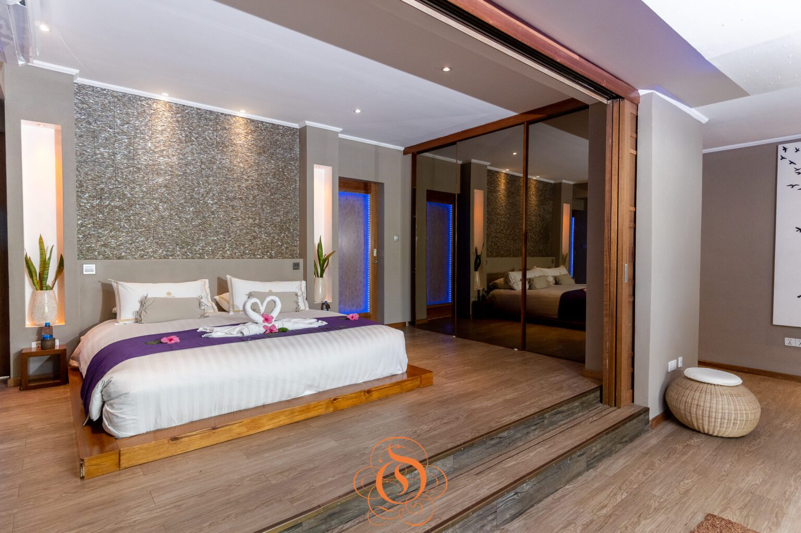
Le Domaine de L'Orangeraie, villa bedroomPhoto: Le Domaine de L'Orangeraie, official photo, via orangeraie.sc
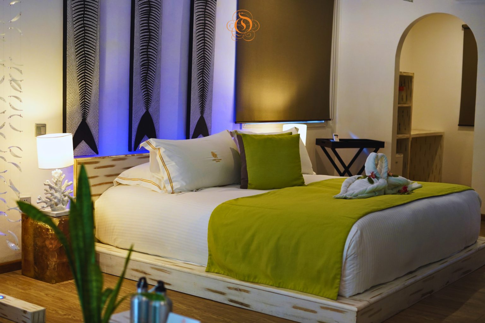
Le Domaine de L'Orangeraie, Garden VillaPhoto: Le Domaine de L'Orangeraie, official photo, via orangeraie.sc
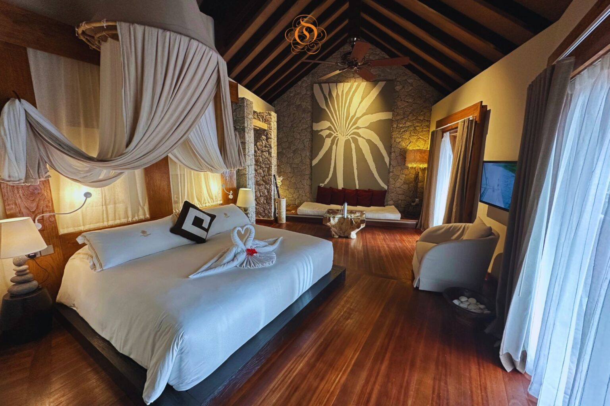
Le Domaine de L'Orangeraie, villa interiorPhoto: Le Domaine de L'Orangeraie, official photo, via orangeraie.sc
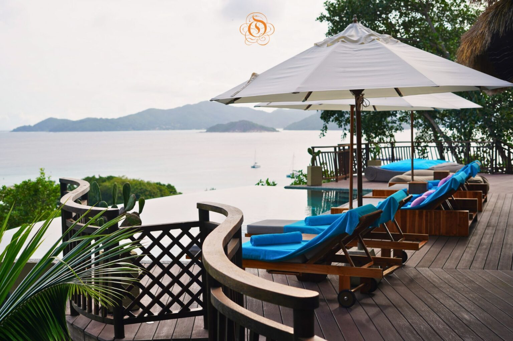
Le Domaine de L'Orangeraie, terrace over the seaPhoto: Le Domaine de L'Orangeraie, official photo, via orangeraie.sc
4 photos
Le Domaine de L'Orangeraie
Villas on the hillside at Anse Sévère with a spa. Garden Suite €292 per person per night with breakfast in February 2027 (€584 for two), per a 2026/27 tour-operator brochure; used in the comfortable option.
La Digue Island Lodge
Beachfront at Anse Réunion, near L'Union Estate; about €200–320 a night in high season (estimate), €260 used in the balanced option.
Note
Room photos above are L'Orangeraie's.
Alternative
Rate (estimate)
Why
Guesthouse in La Passe
About €140
Lean option; walk to the jetty
Seven days, five nights
Day by day
Each day has its own photo set: tap the arrows or swipe; it pauses while you hover or touch. Times are local Seychelles time (UTC+4, 1 h 30 min behind India).
Rajiv Gandhi International Airport, HyderabadPhoto: Ashwin Kumar from Bangalore, India, CC BY-SA 2.0, via Wikimedia Commons
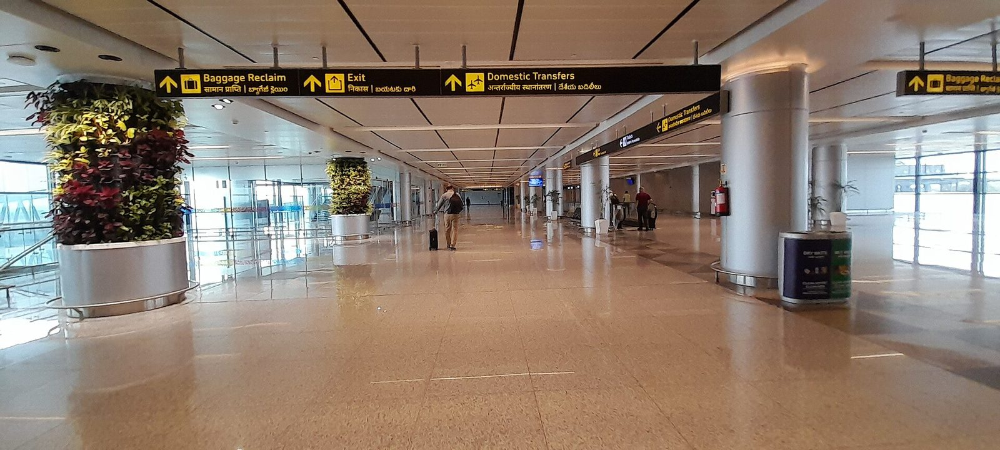
Inside the Hyderabad airport terminalPhoto: Soumendrak, CC BY-SA 4.0, via Wikimedia CommonsAnse Intendance on the south coast of MahéPhoto: dronepicr, CC BY 2.0, via Wikimedia Commons
3 photos
Day 1 of 7 · In transit
Mon 22 Feb: Depart Hyderabad
A late-evening departure via Dubai, so you land on Mahé early on the 23rd with the whole day ahead.
Travel dayOvernight flight
21:25
Hyderabad (HYD) to Dubai (DXB)
Emirates EK529, 21:25–23:55 local, in schedule data for February 2027 dates. Book HYD–SEZ–HYD as one ticket so the connections are protected.
What to do there
Pre-book a vegetarian meal code (VGML or AVML) on every sector
Carry printed or offline copies of the Travel Authorisation, hotel bookings and return ticket
02:40
Dubai to Mahé (SEZ)
EK705, 02:40–07:05, arriving Tue 23 Feb. Alternatives: Etihad EY353 at 04:00 on 23 Feb plus Air Seychelles HM19 via Abu Dhabi (arrives 12:25), or a domestic hop to Mumbai and IndiGo's nonstop 6E1855 (about 4 h 30 min, four days a week; check it runs on your day).
What to do there
Sleep on the second leg
Keep swimwear and sunscreen in cabin bags in case the room is not ready
Keep in mind
Air Seychelles no longer flies Mumbai–Mahé: the route was cancelled from April 2025, so ignore older blogs that suggest it.
Seychelles is 1 h 30 min behind India (UTC+4).
Fares are not price-checked for these dates; the calculator uses estimates.
Avani+ Barbarons and the Barbarons coast from the airPhoto: Avani Hotels, official photo, via avanihotels.com
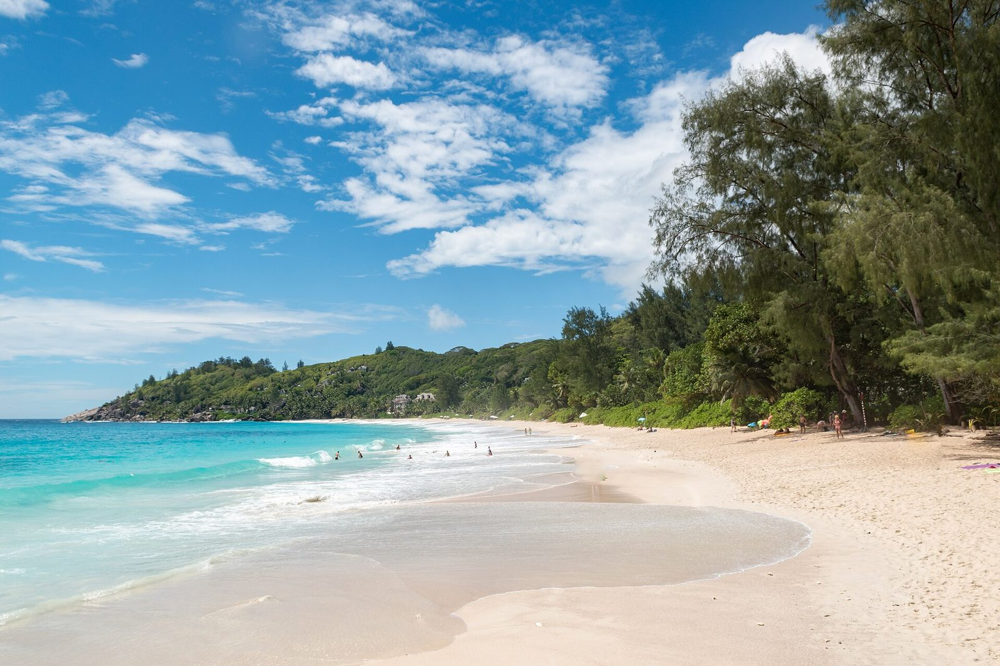
Anse Intendance, MahéPhoto: dronepicr, CC BY 2.0, via Wikimedia Commons
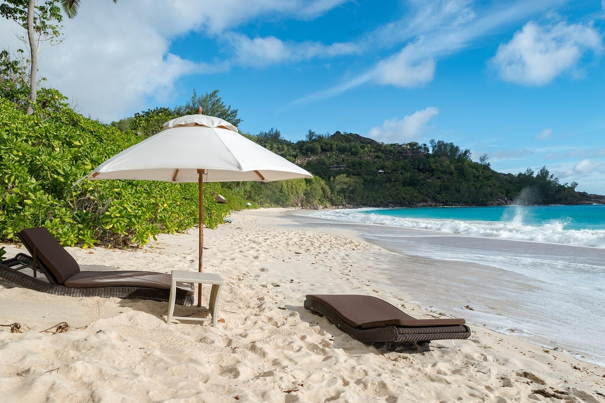
A quiet afternoon on a Mahé beachPhoto: dronepicr, CC BY 2.0, via Wikimedia Commons
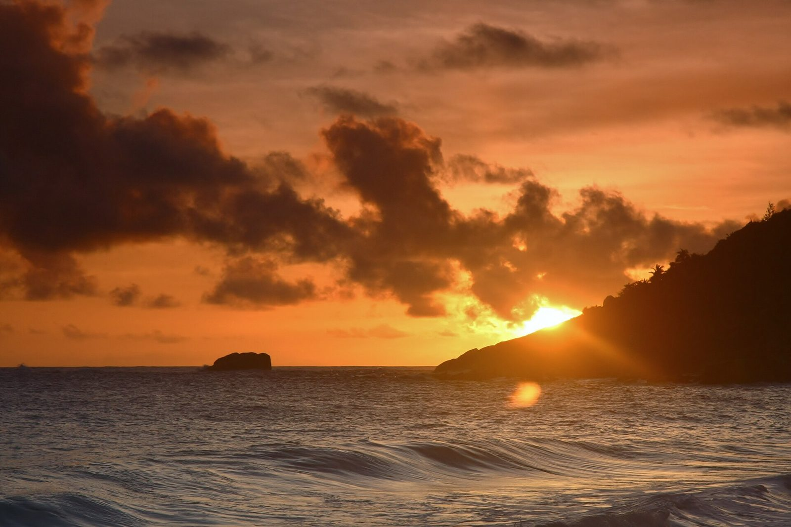
Sunset on the south-west coast of MahéPhoto: Adrian Scottow, CC BY-SA 2.0, via Wikimedia Commons
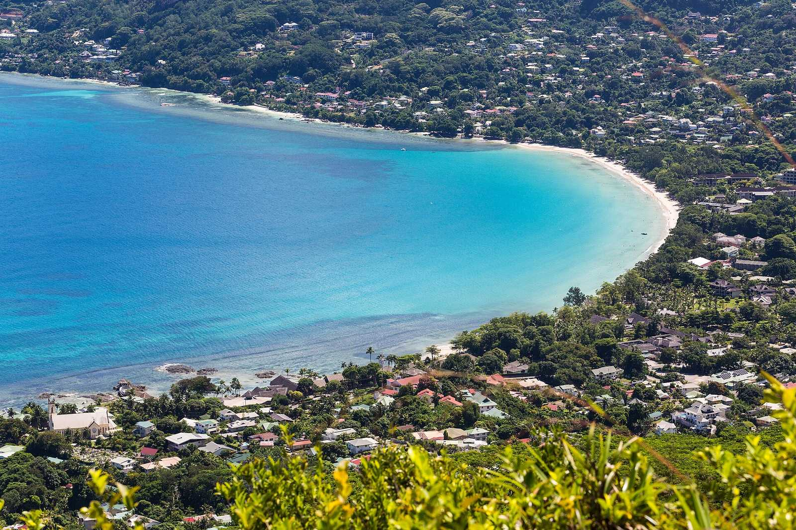
Beau Vallon bay, MahéPhoto: prilfish, CC BY 2.0, via Wikimedia Commons
5 photos
Day 2 of 7 · Mahé · Night 1
Tue 23 Feb: Arrive on Mahé
Clear immigration with your Travel Authorisation, then slow right down at a west-coast resort, with sunset over the water.
Easy dayBeachSunset
07:05
Seychelles International Airport to the hotel
Taxi about SCR 600–800 to Beau Vallon (airport guide, 2026); Barbarons on the west coast is roughly 30–40 minutes (estimate). Early check-in is not guaranteed.
What to do there
Show the Travel Authorisation, return ticket and hotel booking at immigration
Withdraw a little SCR at the airport ATM
Ask the hotel to note strict vegetarian meals
Afternoon
Rest, pool and beach
Jet lag is mild (1 h 30 min). Keep the day light after the overnight flight.
What to do there
Nap, then swim
Book tomorrow's marine-park trip if not done
Evening
Sunset dinner
Sunset about 18:39 (calculated). Eat at the resort, or take a taxi to Mahek at Coral Strand, Beau Vallon, for a dependable Indian vegetarian dinner.
What to do there
Reserve a beach-side table
Keep in mind
Typical February: 29–30°C by day, 24–26°C at night, humid, with short heavy showers.
Pay attention to sea conditions; lifeguards are rare outside Beau Vallon.
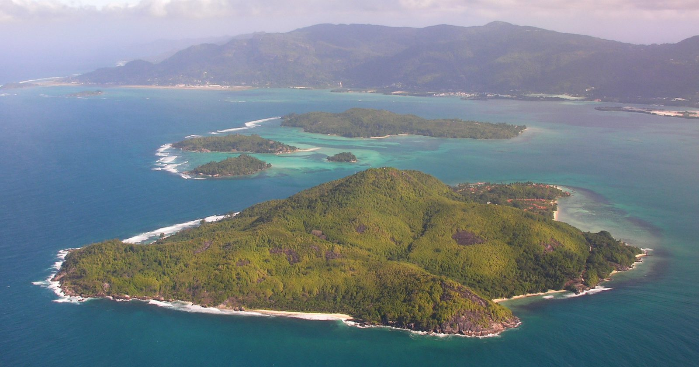
Sainte Anne Marine National Park from the airPhoto: Hansueli Krapf, CC BY-SA 3.0, via Wikimedia Commons
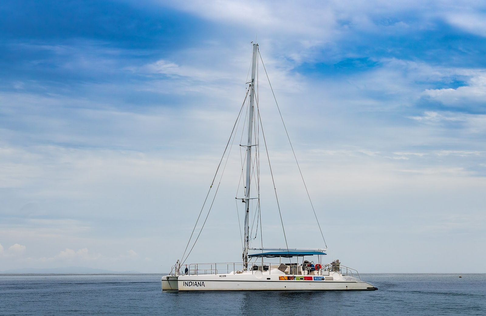
A day-trip catamaran off Mahé (illustrative, not a specific operator)Photo: NorbertNagel, CC BY-SA 4.0, via Wikimedia Commons
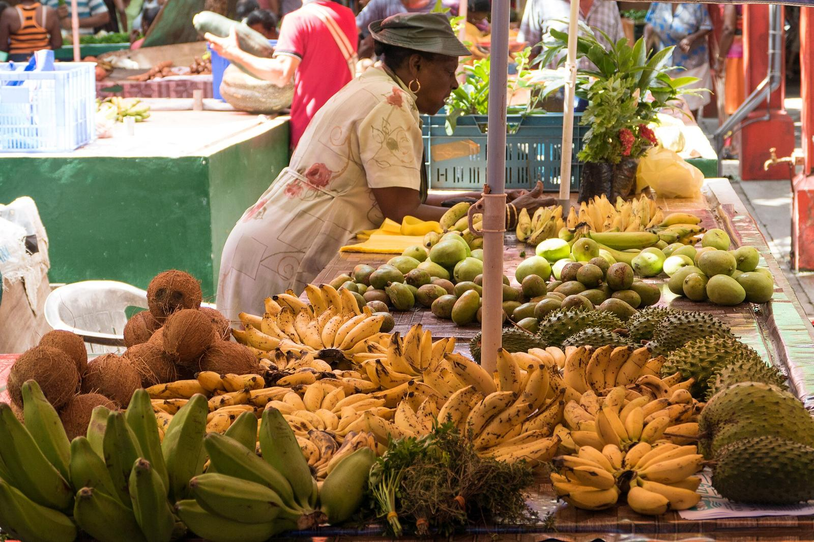
Fruit and vegetable stalls, Sir Selwyn Selwyn-Clarke Market, VictoriaPhoto: So Seychelles, CC BY 2.0, via Wikimedia Commons
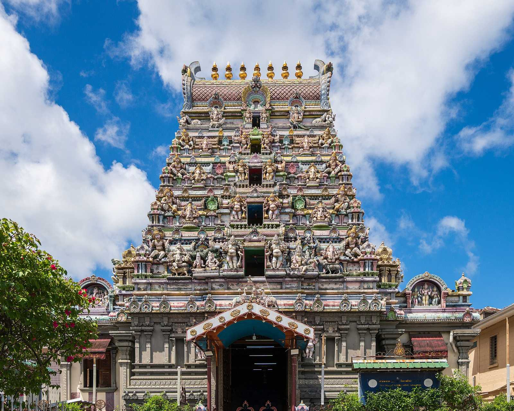
Arul Mihu Navasakthi Vinayagar Temple, VictoriaPhoto: NorbertNagel, CC BY-SA 4.0, via Wikimedia Commons
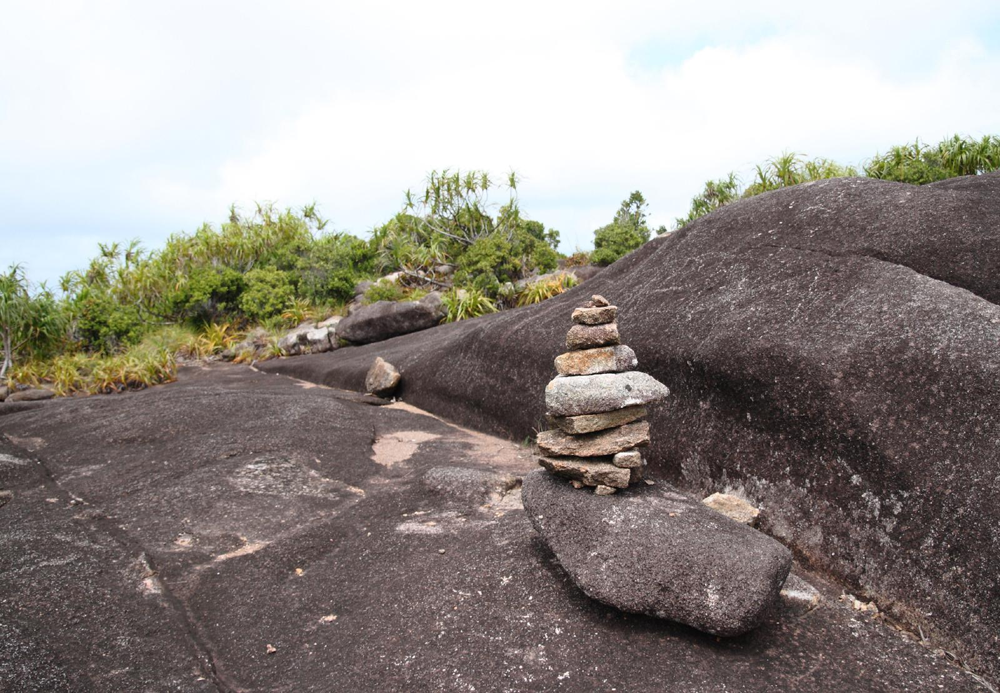
On the granite top of the Copolia trail, MahéPhoto: Remi Jouan, CC BY-SA 3.0, via Wikimedia Commons
5 photos
Day 3 of 7 · Mahé · Night 2
Wed 24 Feb: Marine park and Victoria
Glass-bottom boat and snorkelling in Ste Anne Marine Park, then the capital's market and its Hindu temple.
SnorkellingMarketTemple
09:00–15:00
Ste Anne Marine Park day
Full-day glass-bottom boat, snorkelling and island lunch, about €110–125 per person (operator listings, Nov 2026). A 90-minute clear-boat trip from €85 is the short version.
What to do there
Ask for a vegetarian lunch when booking
Reef-safe sunscreen and a rash guard
Late afternoon
Victoria: Sir Selwyn Selwyn-Clarke Market
Victoria's market is the Sir Selwyn Selwyn-Clarke Market (they are the same place). It is currently trading from the former STC supermarket building; weekdays about 07:00–17:30, Saturday 06:00–14:00, closed Sundays.
SCR 100, 1.2 km and about 1.5 h, no guide needed, open 08:00–16:00. The full Morne Seychellois hike needs a licensed guide (SCR 250 entry). Go early, before the heat.
What to do there
Carry 1.5 litres of water each
Shoes with grip for wet granite
Keep in mind
The market is closed on Sundays, so today is the day for it.
Do not touch or stand on coral; marine-park rules apply.
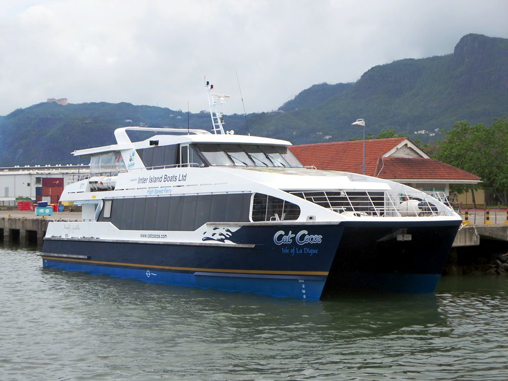
The Cat Cocos ferryPhoto: David Stanley from Nanaimo, Canada, CC BY 2.0, via Wikimedia Commons
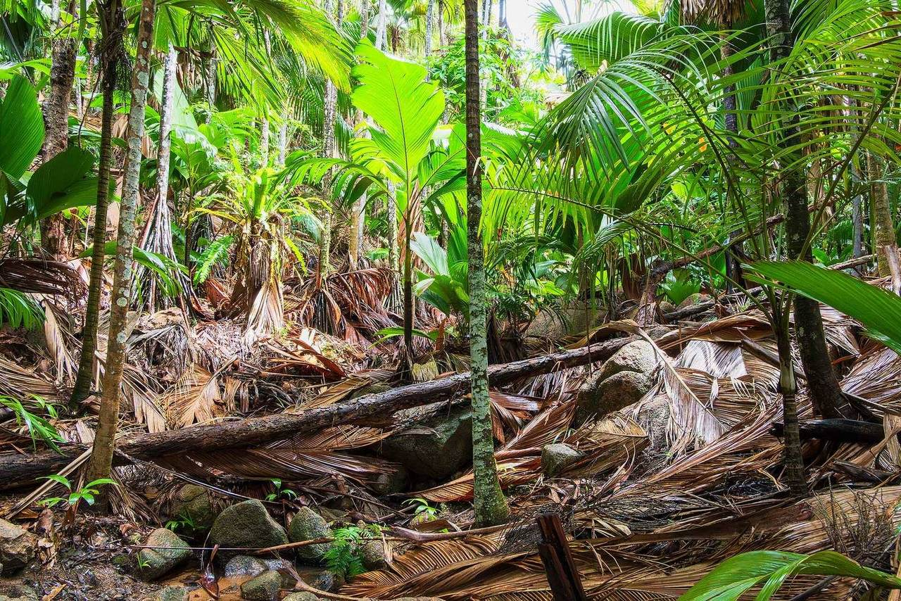
Inside the Vallée de Mai palm forestPhoto: NorbertNagel, CC BY-SA 4.0, via Wikimedia Commons
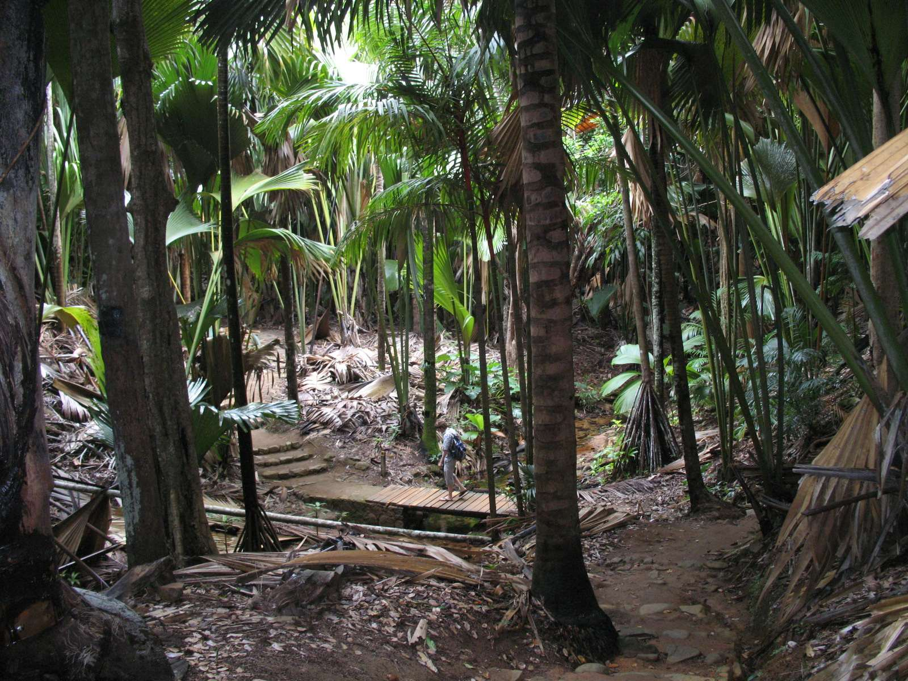
Coco de mer palms, Vallée de MaiPhoto: SeSchu, CC BY-SA 4.0, via Wikimedia Commons
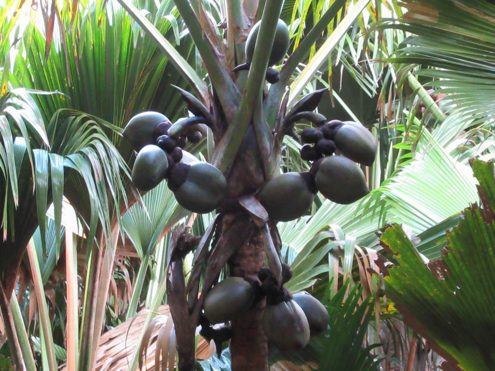
Coco de mer nuts on the palmPhoto: David Stanley from Nanaimo, Canada, CC BY 2.0, via Wikimedia Commons
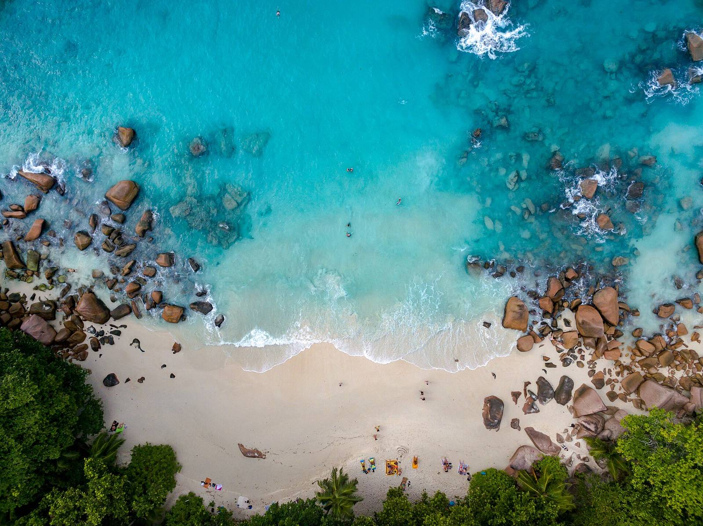
Anse Lazio from abovePhoto: dronepicr, CC BY 2.0, via Wikimedia Commons
5 photos
Day 4 of 7 · Praslin · Night 3
Thu 25 Feb: Ferry to Praslin and Vallée de Mai
Cat Cocos across to Praslin, the coco de mer forest, and sunset at Anse Lazio.
FerryUNESCO forestAnse Lazio
Morning
Cat Cocos, Mahé to Praslin
About 1 h 15 min. €56 per adult on the main deck plus €2 port tax (upper deck +€6, business +€21). Or fly Air Seychelles in 15 minutes, about €75–135 one way (estimate).
What to do there
Book online and arrive an hour early
Take motion-sickness tablets if prone
Midday
Vallée de Mai
UNESCO palm forest with coco de mer and the Seychelles black parrot. SCR 450 at the gate or SCR 410 online; daily 08:30–16:30, last entry 15:30.
What to do there
Walk the 1.5 km inner loop
Listen for black parrots near the visitor centre
Late afternoon
Anse Lazio
One of the islands' best beaches. Sunset about 18:37 (calculated). It faces north-west, so in the February monsoon it can be wavier; swim only when calm.
What to do there
Bring water and snacks; the cafés are few
Keep in mind
Praslin taxis are expensive; agree the fare before you get in.
Indian Ocean Lodge (the balanced pick) is half board, so tonight's dinner is included; confirm it can be made strictly vegetarian.
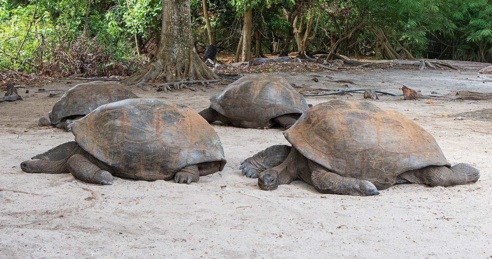
Aldabra giant tortoises on Curieuse IslandPhoto: NorbertNagel, CC BY-SA 4.0, via Wikimedia Commons
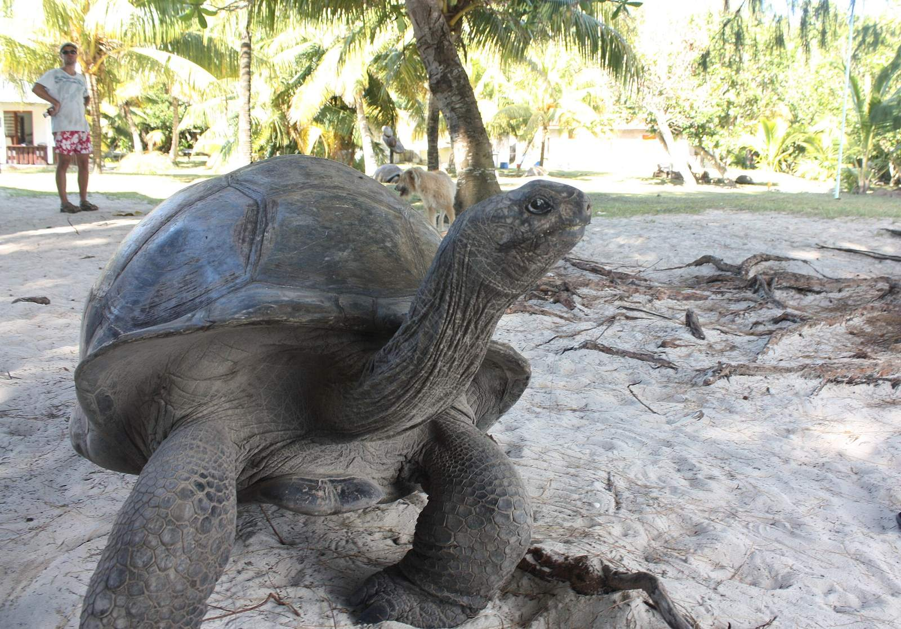
A giant tortoise on CurieusePhoto: Daria, CC BY 3.0, via Wikimedia Commons
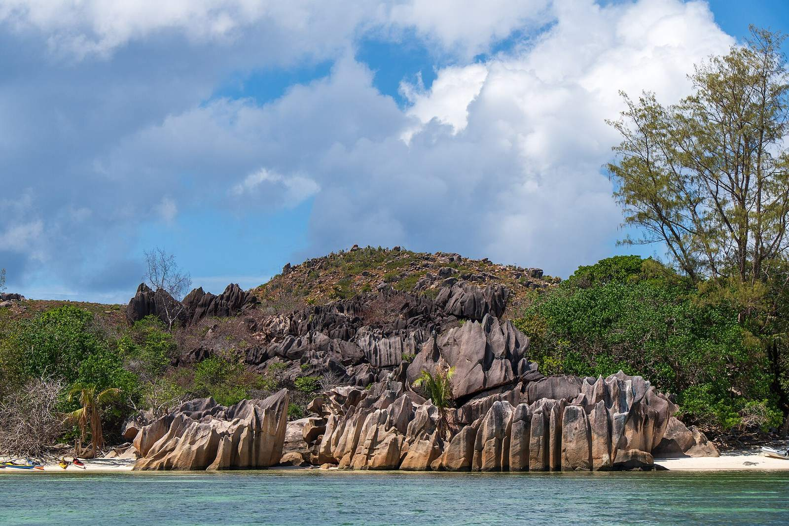
Granite boulders on the Curieuse coastPhoto: NorbertNagel, CC BY-SA 4.0, via Wikimedia Commons
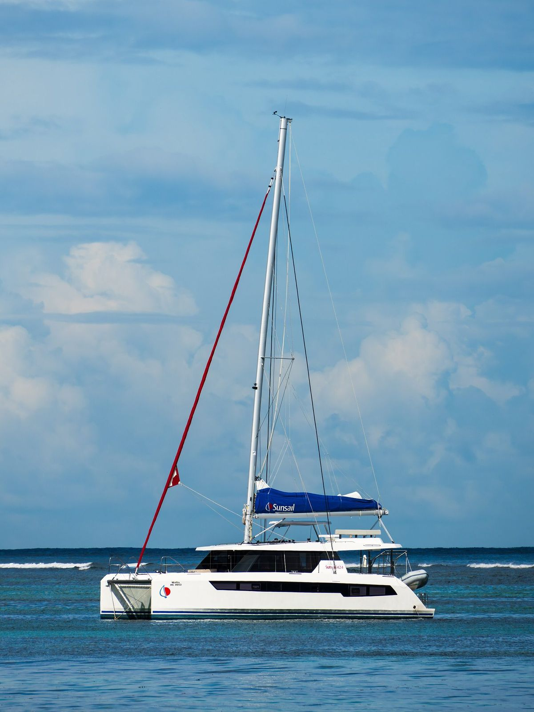
A sailing catamaran in Seychelles waters (illustrative)Photo: NorbertNagel, CC BY-SA 4.0, via Wikimedia Commons
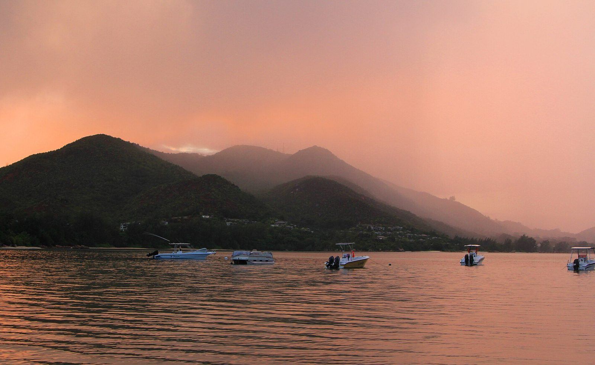
Evening light at Anse Possession, PraslinPhoto: Yulia Kolosova, CC BY 4.0, via Wikimedia Commons
5 photos
Day 5 of 7 · Praslin · Night 4
Fri 26 Feb: Giant tortoises on Curieuse
A boat day to the giant tortoises and mangroves of Curieuse, snorkelling at St Pierre, then a sunset sail or a spa evening.
TortoisesSnorkellingSunset
09:00–16:00
Curieuse and St Pierre day trip
About €79–95 per person with lunch (operator listings, 2026). Aldabra giant tortoises roam the ranger station; a boardwalk crosses the mangroves.
What to do there
Ask for a vegetarian lunch in writing
Waterproof bag for phones
Evening
Sunset catamaran or couples spa
Shared sunset cruise from Praslin about €93 per person; a couples massage at a resort spa about €200–250 for two (estimate).
What to do there
Pick one; both are optional in the calculator
Keep in mind
Boat trips depend on the sea; keep tomorrow morning as a back-up slot.
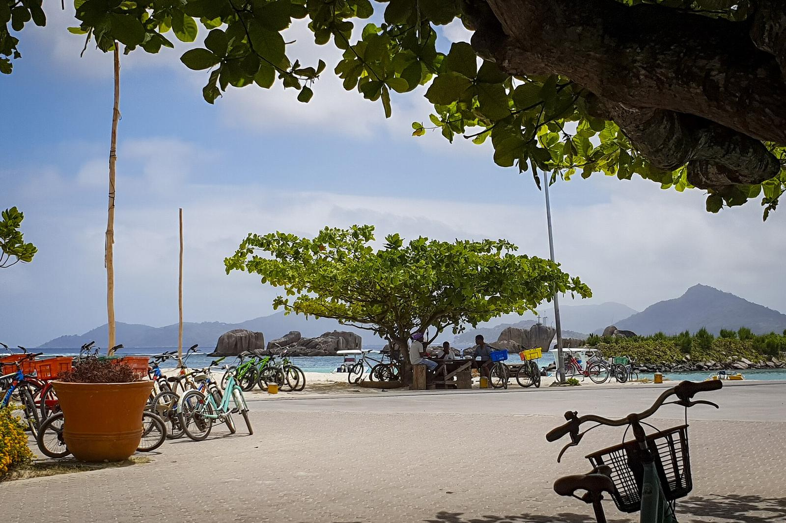
Hire bikes by the La Digue jettyPhoto: Marwa elchazly, CC BY-SA 4.0, via Wikimedia Commons
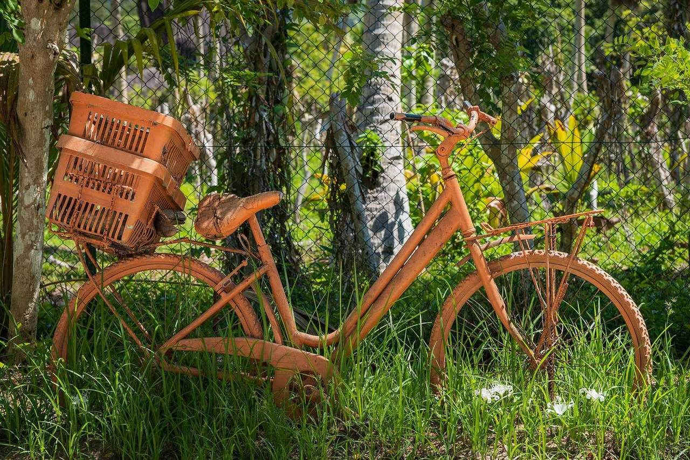
A bicycle sculpture on La DiguePhoto: NorbertNagel, CC BY-SA 4.0, via Wikimedia Commons
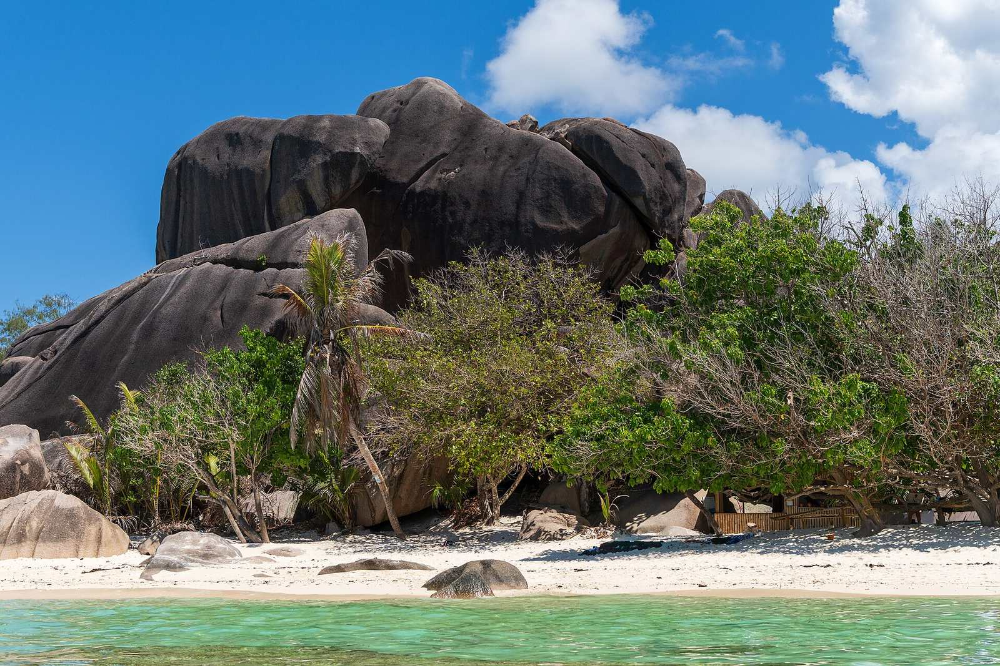
Anse Source d'ArgentPhoto: NorbertNagel, CC BY-SA 4.0, via Wikimedia Commons
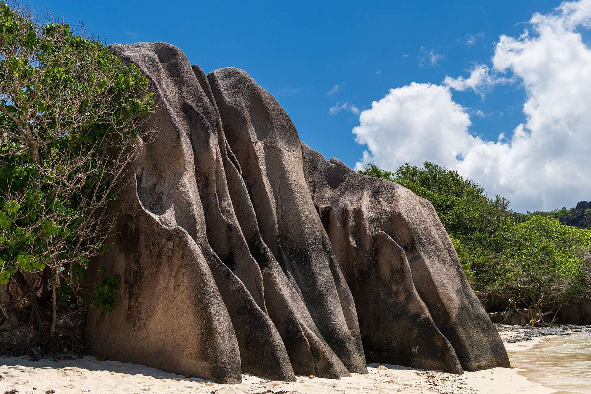
Granite boulders at Anse Source d'ArgentPhoto: NorbertNagel, CC BY-SA 4.0, via Wikimedia Commons
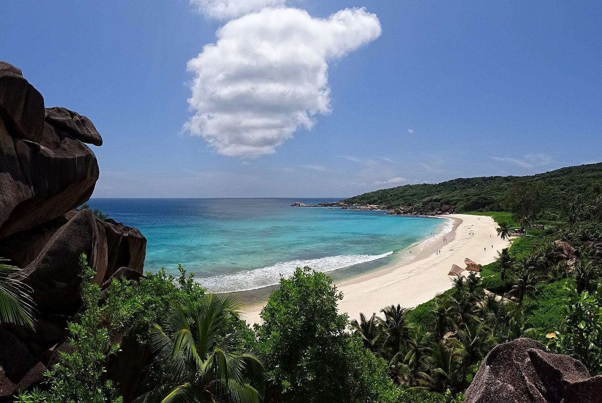
Grand Anse, La DiguePhoto: Bjørn Christian Tørrissen, CC BY-SA 4.0, via Wikimedia Commons
5 photos
Day 6 of 7 · La Digue · Night 5
Sat 27 Feb: Cycling La Digue
Fifteen minutes by ferry to car-free La Digue: bikes, Anse Source d'Argent and Grand Anse.
BikesAnse Source d'ArgentIsland night
Morning
Ferry, Praslin to La Digue
Cat Rose or Cat Cocos, about 15 minutes; €15 plus €1 port tax per adult. The two companies' tickets are not interchangeable.
What to do there
Check out early and take the first comfortable sailing
Late morning
Bikes and L'Union Estate
Bike hire about SCR 150 a day. The L'Union Estate day pass (SCR 150) covers the plantation, tortoises and Anse Source d'Argent; open 06:00–18:00, and a ticket bought after 16:30 is valid the next day.
What to do there
Go near low tide for the best pools
Lock the bike at the beach
Afternoon
Grand Anse
Wild and beautiful, but often has strong currents. Swim only if it is flagged safe.
What to do there
Ride back before dark; lights on bikes are basic
Evening
Sunset and dinner
Sunset about 18:36 (calculated). Tarosa in La Passe serves Indian dishes such as dal and chana masala.
What to do there
Book a table
Keep in mind
La Digue has very few cars; plan everything around bikes and short walks.
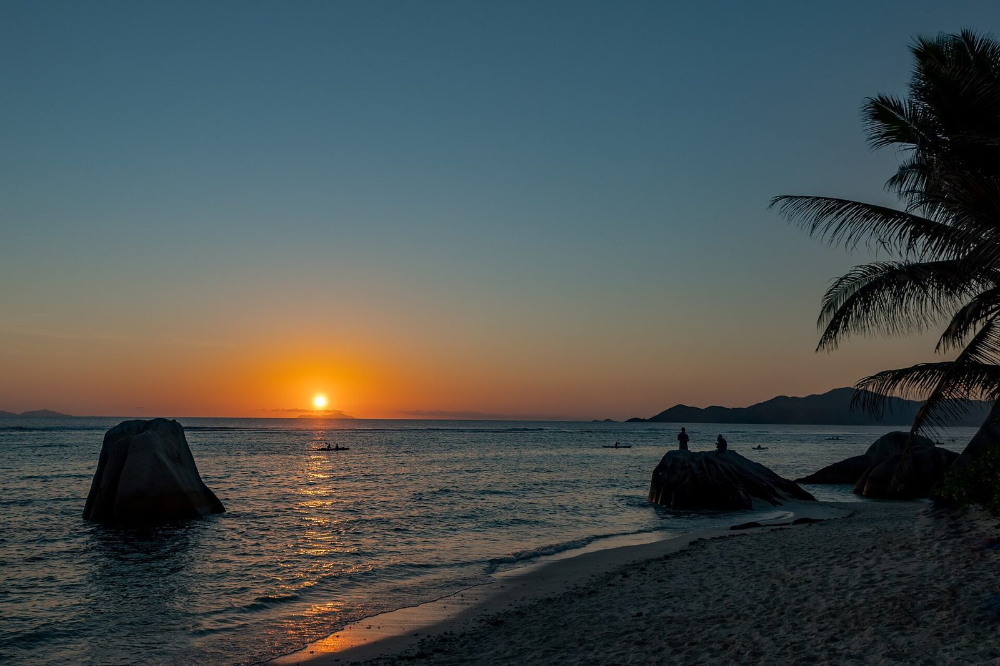
Sunset over La DiguePhoto: dronepicr, CC BY 2.0, via Wikimedia Commons
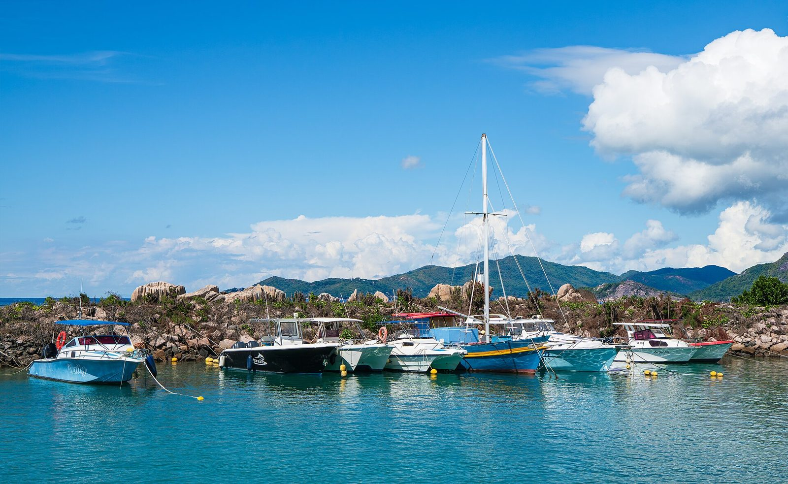
La Passe harbour, La DiguePhoto: NorbertNagel, CC BY-SA 4.0, via Wikimedia Commons
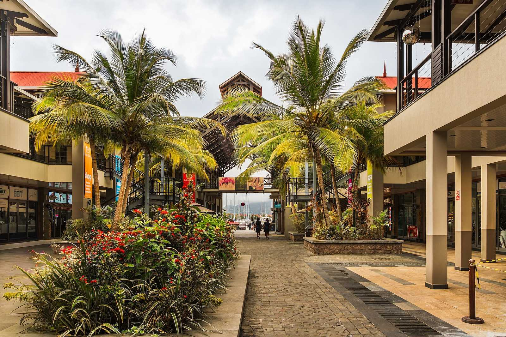
Eden Plaza, Eden IslandPhoto: NorbertNagel, CC BY-SA 4.0, via Wikimedia Commons
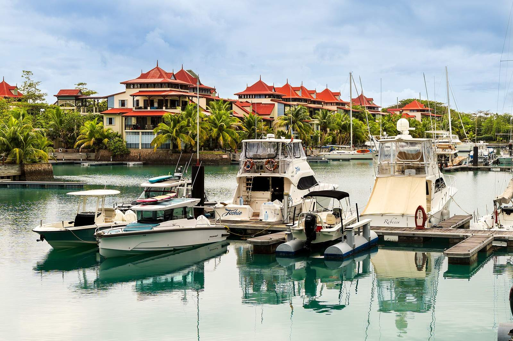
Eden Island marinaPhoto: NorbertNagel, CC BY-SA 4.0, via Wikimedia Commons
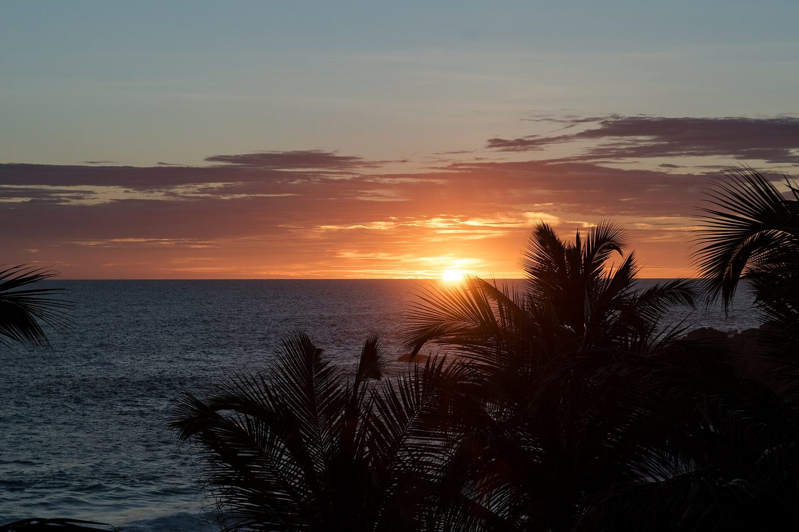
A last sunset on MahéPhoto: dronepicr, CC BY 2.0, via Wikimedia Commons
5 photos
Day 7 of 7 · Travel day
Sun 28 Feb: Back to Mahé and home
A last swim on La Digue, the Cat Cocos back to Mahé, a slow afternoon and the late flight home.
FerryEden IslandNight flight
Midday
Cat Cocos, La Digue to Mahé
€68 plus €2 port tax per adult; about 1 h 10 min direct or 1 h 45 min via Praslin.
What to do there
Check out by the hotel's time; ask to store bags
Afternoon
Eden Island
Shops by the marina and The Maharajas, which has a separate vegetarian menu. Book a day room or a lounge if you want a shower before the night flight.
What to do there
Victoria's market is closed on Sundays
23:55
Mahé to Dubai to Hyderabad
Emirates EK708 at 23:55 on Sundays to Dubai, then an Emirates connection to Hyderabad arriving on 1 Mar (re-confirm timings when booking).
What to do there
Be at the airport by about 21:00
Keep in mind
Keep some SCR or euros for the airport; the departure tax is already in the ticket price.
For the two of you
Honeymoon touches
Idea
Where and when
Price
Vegetarian note
Sunset dinner on the sand
Your Mahé resort, 23 Feb
Ask the hotel
Confirm a strictly vegetarian menu in writing
Sunset catamaran
Praslin, 26 Feb, or Sun Chasers from Mahé
About €93–100 per person
Snacks are often fish-based; ask, or eat before
Couples spa
Any resort spa
About €200–250 for two (estimate)
Private picnic at Anse Source d'Argent
La Digue, 27 Feb, near low tide
Day pass SCR 150 each
Pack fruit from Victoria market and snacks from home
Temple visit together
Arul Mihu Navasakthi Vinayagar Temple, Victoria, 24 Feb
Free
Dress modestly
Catalog
All activities
A catalog of 16 options checked on operators' and official sites on 15 Nov 2026. Prices are per adult unless marked, in the operator's currency (€ or Seychelles rupees, SCR). Rows marked "Any island" show under every island.
Activity
Island
Type
What it is
Price
Time
In plan
Official link
Ste Anne Marine Park glass-bottom and snorkel day
Mahé
Sea and snorkelling
Glass-bottom boat, snorkelling, island lunch, tortoise visit
Wild east-coast beach; strong currents, swim only if safe
Free
2 h
Day 6
Couples spa massage
Any island
Honeymoon and spa
Most resorts have a spa; book a 60–90 minute couples treatment
About €200–250 for two (estimate)
1.5 h
Option
Eating well
Strict vegetarian food
Creole food is built on fish, so be explicit. Send this to every hotel and tour operator and keep their written replies. If you also avoid eggs, add that separately.
We are strict vegetarians. We do not eat meat, fish, seafood or any meat or fish stock, broth or sauce (including fish sauce and dried fish). Please confirm that vegetarian meals can be prepared without these ingredients, including at breakfast and on boat trips.
Island
Place
What
Notes
Mahé
Mahek, Coral Strand Hotel, Beau Vallon
Indian restaurant with vegetarian dishes
Taxi from Barbarons; book ahead
Mahé
The Maharajas, Eden Island
Indian, with a separate vegetarian and vegan menu (HappyCow)
Good for the last evening, 28 Feb
Mahé
Sir Selwyn Selwyn-Clarke Market, Victoria
Fresh fruit, bananas, coconuts, spices
Closed Sundays
Praslin
Your hotel's half board or breakfast
Few Indian restaurants on the island
Agree vegetarian dinners in advance
La Digue
Tarosa, La Passe
Indian dishes: dal, biryani, chana masala (HappyCow)
Near the jetty
Safe Creole choices to ask for: lentil curry (lantiy), breadfruit, banana or pumpkin curry with coconut, palm-heart salad, rice; always confirm no fish stock.
Carry khakhra, thepla, nuts and ready-to-eat vegetarian food for boat days; check customs rules on food.
Supermarkets in Victoria and near the Praslin and La Digue jetties sell bread, fruit and snacks.
Late February
Weather and daylight
Measure
Late February
What it means
Temperature
About 29–30°C by day, 24–26°C at night
Light cotton and linen; air-conditioned rooms
Rain
About 250–280 mm in the month, mostly short heavy showers and thunderstorms
Expect some rain most days, rarely all day
Humidity
Around 80%
Hikes feel harder; start early
Sea
About 29°C
Warm for snorkelling
Wind
North-west monsoon, generally light; seas often calm
North-west-facing bays such as Anse Lazio and Beau Vallon can be wavier
Daylight
Sunrise about 06:25, sunset about 18:37
About 12 h 10 min of daylight
Realistic expectations. February is the warm, wet season, not the dry one. Plan beaches and boat trips for mornings, keep one flexible slot, and expect heavy but short showers.
Estimate, not a quote
Budget calculator
Every field is editable. Defaults are the balanced option; hotel rates, fares, food, taxis and insurance are estimates. Exchange rates as of 13–15 Nov 2026 (₹104.16 per €, ₹6.50 per SCR).
Activities to include
Total for the trip
Per person
Against the ₹5 lakh ceiling
Hotels
Line
Basis
₹
Selected activity
Local price for the group
₹
Getting around
Local transport and taxis
Where
Option
Price
Notes
Mahé airport → hotel
Taxi
SCR 600–800 to Beau Vallon (airport guide, 2026)
Agree the fare first; hotels can pre-book transfers
Mahé
Public bus
SCR 10 per ride
Cheap but slow; fine for Victoria
Mahé
Hire car
About €40–60 a day (estimate)
Drive on the left; narrow mountain roads
Victoria jetty ↔ airport
SeyFerry shuttle
€11 per adult
Must be linked to an international flight
Praslin
Taxi or bus
Taxis expensive (estimate SCR 400–700 a hop); bus SCR 10
Hotels often run jetty transfers
La Digue
Bicycle
About SCR 150 a day
Few cars; ox-carts and electric buggies for luggage
Pack for the tropics
Packing list
Reef-safe mineral sunscreen, SPF 50, plus after-sun
Rash guards or long-sleeve swim tops
Light cotton and linen clothes, a hat and sunglasses
A compact umbrella or light rain jacket
Insect repellent
Water shoes for rocky beaches, and sandals
Own snorkel mask if you have one; a dry bag for boat days
Modest clothes for the temple and churches
Type G plug adapter (UK three-pin)
Motion-sickness tablets for the ferries and boats
Euros or US dollars in cash, plus a card
Vegetarian snacks from India, within customs rules
Next steps
Booking order
International flightsOne return ticket; the Emirates timings fit the plan best
Hotels on all three islandsChoose lean, balanced or comfortable; prefer free cancellation
FerriesCat Cocos Mahé–Praslin 25 Feb, Cat Rose Praslin–La Digue 27 Feb, Cat Cocos La Digue–Mahé 28 Feb
Travel AuthorisationOn seychelles.govtas.com once flights and hotels are confirmed, within 10 days and at least 48 hours before departure
ToursSte Anne Marine Park and Curieuse; optional sunset cruise and spa
Travel insuranceCover the whole trip, including snorkelling
Strict vegetarian requestsWritten confirmation from every hotel and tour
Flights · Not booked, as of 15 Nov 2026
Hotels · Not booked, as of 15 Nov 2026
Ferries and tours · Not booked, as of 15 Nov 2026
Travel Authorisation and insurance · Not started, as of 15 Nov 2026
Facts were checked on 15 Nov 2026; sunrise and sunset are calculated. Photos are real, from Wikimedia Commons or the hotels' own websites, credited under each image.
Anse Lazio, Praslin, from the air. Photo: dronepicr, CC BY 2.0, via Wikimedia Commons
Anse Intendance on the south coast of Mahé. Photo: dronepicr, CC BY 2.0, via Wikimedia Commons
Anse Lazio, Praslin. Photo: dronepicr, CC BY 2.0, via Wikimedia Commons
Anse Source d'Argent, La Digue. Photo: Tobias Alt, Tobi 87, CC BY-SA 4.0, via Wikimedia Commons
Rajiv Gandhi International Airport, Hyderabad. Photo: Ashwin Kumar from Bangalore, India, CC BY-SA 2.0, via Wikimedia Commons
Inside the Hyderabad airport terminal. Photo: Soumendrak, CC BY-SA 4.0, via Wikimedia Commons
Avani+ Barbarons and the Barbarons coast from the air. Photo: Avani Hotels, official photo, via avanihotels.com
Anse Intendance, Mahé. Photo: dronepicr, CC BY 2.0, via Wikimedia Commons
A quiet afternoon on a Mahé beach. Photo: dronepicr, CC BY 2.0, via Wikimedia Commons
Sunset on the south-west coast of Mahé. Photo: Adrian Scottow, CC BY-SA 2.0, via Wikimedia Commons
Beau Vallon bay, Mahé. Photo: prilfish, CC BY 2.0, via Wikimedia Commons
Sainte Anne Marine National Park from the air. Photo: Hansueli Krapf, CC BY-SA 3.0, via Wikimedia Commons
A day-trip catamaran off Mahé (illustrative, not a specific operator). Photo: NorbertNagel, CC BY-SA 4.0, via Wikimedia Commons
Fruit and vegetable stalls, Sir Selwyn Selwyn-Clarke Market, Victoria. Photo: So Seychelles, CC BY 2.0, via Wikimedia Commons
Arul Mihu Navasakthi Vinayagar Temple, Victoria. Photo: NorbertNagel, CC BY-SA 4.0, via Wikimedia Commons
On the granite top of the Copolia trail, Mahé. Photo: Remi Jouan, CC BY-SA 3.0, via Wikimedia Commons
The Cat Cocos ferry. Photo: David Stanley from Nanaimo, Canada, CC BY 2.0, via Wikimedia Commons
Inside the Vallée de Mai palm forest. Photo: NorbertNagel, CC BY-SA 4.0, via Wikimedia Commons
Coco de mer palms, Vallée de Mai. Photo: SeSchu, CC BY-SA 4.0, via Wikimedia Commons
Coco de mer nuts on the palm. Photo: David Stanley from Nanaimo, Canada, CC BY 2.0, via Wikimedia Commons
Anse Lazio from above. Photo: dronepicr, CC BY 2.0, via Wikimedia Commons
Aldabra giant tortoises on Curieuse Island. Photo: NorbertNagel, CC BY-SA 4.0, via Wikimedia Commons
A giant tortoise on Curieuse. Photo: Daria, CC BY 3.0, via Wikimedia Commons
Granite boulders on the Curieuse coast. Photo: NorbertNagel, CC BY-SA 4.0, via Wikimedia Commons
A sailing catamaran in Seychelles waters (illustrative). Photo: NorbertNagel, CC BY-SA 4.0, via Wikimedia Commons
Evening light at Anse Possession, Praslin. Photo: Yulia Kolosova, CC BY 4.0, via Wikimedia Commons
Hire bikes by the La Digue jetty. Photo: Marwa elchazly, CC BY-SA 4.0, via Wikimedia Commons
A bicycle sculpture on La Digue. Photo: NorbertNagel, CC BY-SA 4.0, via Wikimedia Commons
Anse Source d'Argent. Photo: NorbertNagel, CC BY-SA 4.0, via Wikimedia Commons
Granite boulders at Anse Source d'Argent. Photo: NorbertNagel, CC BY-SA 4.0, via Wikimedia Commons
Grand Anse, La Digue. Photo: Bjørn Christian Tørrissen, CC BY-SA 4.0, via Wikimedia Commons
Sunset over La Digue. Photo: dronepicr, CC BY 2.0, via Wikimedia Commons
La Passe harbour, La Digue. Photo: NorbertNagel, CC BY-SA 4.0, via Wikimedia Commons
Eden Plaza, Eden Island. Photo: NorbertNagel, CC BY-SA 4.0, via Wikimedia Commons
Eden Island marina. Photo: NorbertNagel, CC BY-SA 4.0, via Wikimedia Commons
A last sunset on Mahé. Photo: dronepicr, CC BY 2.0, via Wikimedia Commons
Avani+ Barbarons, guest room. Photo: Avani Hotels, official photo, via avanihotels.com
Avani+ Barbarons, beach-access room terrace. Photo: Avani Hotels, official photo, via avanihotels.com
Avani+ Barbarons, terrace facing the sea. Photo: Avani Hotels, official photo, via avanihotels.com
Avani+ Barbarons, pool. Photo: Avani Hotels, official photo, via avanihotels.com
Hotel L'Archipel, Superior Room. Photo: Hotel L'Archipel, official photo, via larchipel.com
Hotel L'Archipel, Superior Room. Photo: Hotel L'Archipel, official photo, via larchipel.com
Hotel L'Archipel, balcony. Photo: Hotel L'Archipel, official photo, via larchipel.com
Hotel L'Archipel above Anse Gouvernement. Photo: Hotel L'Archipel, official photo, via larchipel.com
The beach below Hotel L'Archipel. Photo: Hotel L'Archipel, official photo, via larchipel.com
Le Domaine de L'Orangeraie, villa bedroom. Photo: Le Domaine de L'Orangeraie, official photo, via orangeraie.sc
Le Domaine de L'Orangeraie, Garden Villa. Photo: Le Domaine de L'Orangeraie, official photo, via orangeraie.sc
Le Domaine de L'Orangeraie, villa interior. Photo: Le Domaine de L'Orangeraie, official photo, via orangeraie.sc
Le Domaine de L'Orangeraie, terrace over the sea. Photo: Le Domaine de L'Orangeraie, official photo, via orangeraie.sc
Commons photos are used under the licence shown on each file page (CC BY / CC BY-SA); none were altered beyond resizing. Hotel photos are the hotels' own promotional images, shown for reference only and not openly licensed. Photos marked illustrative show the kind of experience, not the exact operator. There are no photos of the balanced-option hotels (Indian Ocean Lodge, La Digue Island Lodge); the slideshows show the comfortable picks.